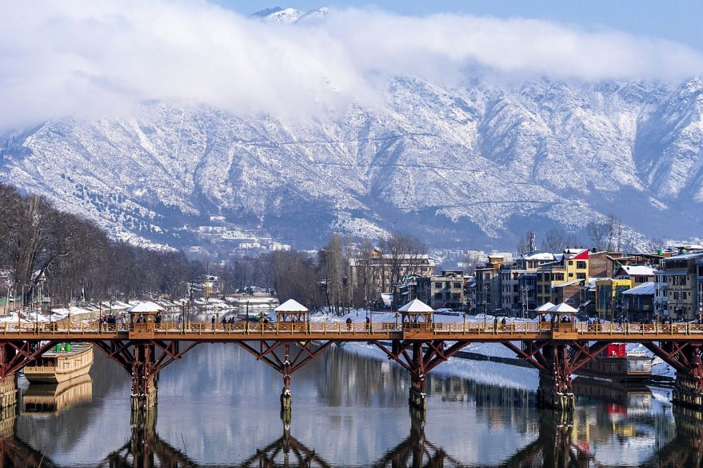

1.Dal Lake
The tourist’s paradise Srinagar is the summer capital of Kashmir. Among myriads of tourist attractions in Srinagar, Dal Lake is a jewel which is a wide range of pristine water bouncing back the wooden sculpted balcony rich eye catchy houseboats and the entire stunning area is garlanded with Pir Panjal Mountains.The beautifully decorated Shikaras float on the Dal Lake to transport goods, to reach tourists to houseboats and from flotillas to shore.
Dal Lake has rightfully become an icon of the Kashmir tourism industry. A Himalayan urban lake, it has five basins and a number of channels that are well linked with each other. There are plenty of fishes in Dal Lake and fishery is the second largest industry of the region centered on the lake. It is also the second largest lake in the State of Jammu and Kashmir with numerous gardens and orchards all along its shores. Houseboats form an indelible part of the scenery of the Dal Lake that are always ready to take tourists to a romantic and peaceful ride of the lake and soothe their nerves as the houseboat floats over the slightly rippling waters. They also offer some of the most exotic views of the splendid scenery of the Dal Lake.

2.Ladakh
Are you planning to trip Kashmir? Then never miss to put your footstep at the “Land of High Passes.” Ladakh, the “Adventure Capital of India” is the ideal landmark of adventure enthusiasts due to its unlimited majestic offerings. The name of Ladakh is associated with adventure just like student and school. This culturally rich landmark is located in the “Heaven on Earth” i.e Kashmir.
Ladakh covers about 45,000 square miles (117,000 square km) and contains the Ladakh Range, which is a southeastern extension of the Karakoram Range, and the upper Indus River valley. Ladakh is one of the highest regions of the world. Its natural features consist mainly of high plains and deep valleys. The high plain predominates in the east, diminishing gradually toward the west. In southeastern Ladakh lies Rupshu, an area of large, brackish lakes with a uniform elevation of about 13,500 feet (4,100 metres). To the northwest of Rupshu lies the Zaskar Range, an inaccessible region where the people and the cattle remain indoors for much of the year because of the cold. Zaskar is drained by the Zaskar River, which, flowing northward, joins the Indus River below Leh. In the heart of Ladakh, farther to the north, cultivation by means of manuring and irrigation is practiced by farmers living in valley villages at elevations between about 9,000 and 15,000 feet (2,750 and 4,550 metres). Shepherds tend flocks in the upland valleys that are too high for cultivation. Leh, the most accessible town of Ladakh, is an important trade centre located 160 miles (260 km) east of Srinagar.

3.Vaishno Devi Temple
Shri Mata Vaishno Devi Temple is considered as one of the holiest shrines of the current era. Shakti is considered as the main tutelary deity in this great temple where the main incantation is “Moonh Maangi Muradein Poori Karne Wali Mata”. The meaning of this hymn is that the Mata Vaishno Devi satisfies her disciples if prayed in a righteous way. This Goddess is worshiped in many names viz. Mata Rani or Vaishnavi. The four objectives of human life are Righteousness (Dharm), Material Pursuits (Aarth), Contentment (Kaam) and Enlightenment (Moksh).
The Appearance of Vaishno Devi to Shridhar and the story of Bhairon Nath It is said that Bhairon Nath, a famous Hindu Tantric, saw the young Vaishno Devi at an agricultural fair and fell madly in love with her. Vaishno Devi fled into Trikuta hills to escape his amorous advances, later she assumed the form of Mahakali and cut off his head with her sword in a cave.[2] Professor and author Tracy Pintchman narrates the story as, "About nine hundred years ago Vaishno Devi appeared in the form of young girl and commanded a Brahmin named Shri Dhar from the village Hansali (next to present day Katra) to hold a feast (bhandara) for local people near Bhumika stream. At the time of feast, Bhairon Nath, a disciple of Goraknath, appeared and demanded meat and liquor. But Vaishno Devi told him he would get only vegetarian food, since this was a Brahmin's feast. Seeing her, Bhairon Nath lusted after her. To escape him, she ran away stopping at various places on the trail up the Trikuta mountain. There places are now known as Banganga, Charan Paduka, Adi Kumari —the place where she is said to have remained for nine months in a cave, — and finally at Bhavana, the cave that is now known as her home. There taking the form of Chamundi (a form of Kali), she beheaded Bhairon Nath. His body held at the entrance to the cave, and his head landed further up the mountain at a place where a Bhairon Nath temple is now located.

4. Shalimar and Nishat Garden
Being travel seeker if you want to get the touch of Mughal instance then you must visit the Shalimar and Nishat Bagh in Srinagar. Tourists keep the specimen of Mughal horticulture by visiting these two beautiful places in Kashmir.
The gardens are typically designed with fascinating fountains, mesmerizing pools and captivating canals to enhance the glamour of these gardens. Among these gardens Shalimar Bagh was the dream offering of Mughal Emperor Jahangir to his queen Nur Jahan to make please. On the other hand, Nishat Garden has also an interesting history.
Nishat Bagh is a terraced Mughal garden built on the eastern side of the Dal Lake, close to Srinagar in the UT of Jammu and Kashmir, India. It is the second largest Mughal garden in the Kashmir Valley. The largest in size is the Shalimar Bagh, which is also located on the bank of the Dal Lake. ‘Nishat Bagh’ is Urdu, which means “Garden of Joy,” “Garden of Gladness” and “Garden of Delight. Located on the bank of the Dal Lake, with the Zabarwan Mountains as its backdrop, Nishat Bagh is a garden of bliss that commands a magnificent view of the lake beneath the snow-capped Pir Panjal mountain range that stands far away to the west of the valley. The Bagh was designed and built in 1633 by Asif Khan, elder brother of Nur Jehan.

5. Wular Lake
The wide-reaching Wular Lake is the consequence of tectonic condition of earth and contribution of the river Jhelum. It is one of the significant places of attraction being the Asia’s largest freshwater lake. The tons of nature lovers come to this point to watch different kinds of migratory and terrestrial birds and water creatures like rosy barb, common crap, mosquitofish and many more.
Among the birds golden oriole, black-eared kite, barn swallow, Himalayan woodpecker, sparrowhawk, alpine swifts and many more can be captured in a lens.
Wular Lake is the 2nd largest fresh-water lake of Asia, situated on the foothills of Haramuk Mountain. It is spread in a total area of 200 square km covering almost 24 km in length while its breadth is 10 km. The lake lies between the towns of Sopur and Bandippore, in Sangrama, near Baramula Road. Main source of water for Wular Lake is River Jhelum. This lake also has a small island in its centre called the ‘Zaina Lank’. This island was constructed by King Zainul-Abi-Din. Wular Lake is also said to be a remnant of Satisar Lake that existed in ancient times. The premises of this lake also form a popular sunset point.

6. Amarnath Temple
The holy shrine of Amarnath Ji, or Amarnath Temple, is located at an elevation of 3,888 meters approx, about 29 kilometers from Pahalgam. Inside the cave is a Shiva Lingam (a phallus shaped formation made of ice), considered to be the most holy symbol by Hindus all across the globe. Devotees visit it in large numbers from June to August, with the pilgrimage tour famously known as Amarnath Yatra, which begins from Chandanwari. It is considered to be one of the 18 Maha Shakti Peethas, or the holiest shrines in Hinduism. Besides seeking blessings at the Amarnath Temple, the views surrounding it are extraordinary.
The place where the Amarnath Cave stands today is believed to be the same place where Lord Shiva explained the meaning of life and eternity to his consort & wife, Goddess Parvati. According to legends, Bhrigu Muni, a famous sage in Hinduism, was the first person to have discovered this holy site. At that time, the entire Kashmir Valley was submerged under water, and Kashyap Muni, another powerful sage, drained the waters with his divine powers. As the waters cleared, Bhrigu Muni was the first person to have the site of the Shiva Lingam.You can hire a private vehicle from Jammu to Pahalgam & Baltal, state transport buses are also available. There are two trekking routes to reach Amarnath Cave, the shorter one via Baltal & the traditional one which passes through Srinagar. You can also avoid the long difficult trek and opt for taking Amarnath.
7. Betab Valley
Betaab Valley, which is a part of Pahalgam area – one of the several Sub-valleys of Kashmir Valley came into existence during the post geosynclinal stage of the development of the Himalayas. Betaab Valley lies between the two Himalayan Ranges – Pir Panjal and Zanskar. Archaeological evidence proves the human existence in this region from the Neolithic Age, especially at Burzahom, Bomai and Pahalgam. Betaab Valley – a part of the Kashmir region, was ruled by the Mughals since the 15th Century. In latter part of the 15th century the Turko-Mughal Military General Mirza Muhammad Haidar Dughlat ruled over Kashmir first on behalf of Sultan Said Khan of Kashgar and then on behalf of the Mughal Emperor Humayun. Ghiyas-ud-Din Zain-ul-Abidin invaded and ruled Kashmir region for about 40 years during which he was famous for promoting peace and harmony in Kashmir.[citation needed] He even gave a directive to restore and restructure Kashmir during his reign – in sharp contrast to the other plunderers who preceded him.[citation needed]
Betab Valley is a very popular touristic destination. Betaab Valley is also a favorite campsite of travelers as it also serves as a base camp for trekking and further exploration of the mountains. The valley is a walk-able distance from Pahalgam. The crystal clear & chilly water of the stream bubbling down from the snowy hills is a delight; locals here drink this water too. Baisaran and Tulian Lake are few nearby attractions that can be visited.
8. Srinagar
Being the summer capital of Kashmir, Srinagar holds an eternal uniqueness to the travel enthusiasts of all over the world. To arrive the panoramic valley of Kashmir, tourists have to stretch out to this gateway. One of the most important tributaries of Indus, the mirror-sheet like Jhelum River welcomes the tourists after reaching the largest city of Kashmir.
In 1989, Srinagar became the focus of the insurgency against Indian rule. The area continues to be a highly politicised hotbed of separatist activity with frequent spontaneous protests and strikes ("bandhs" in local parlance). On 19 January 1990, the Gawakadal massacre of at least 50 unarmed protestors by Indian forces, and up to 280 by some estimates from eyewitness accounts, set the stage for bomb blasts, shootouts, and curfews that characterised Srinagar throughout the early and mid-1990s.[24][25] As a result, bunkers and checkpoints are found throughout the city, although their numbers have come down in the past few years as militancy has declined. However, frequent protests still occur against Indian rule, such as the 22 August 2008 rally in which hundreds of thousands of Kashmiri civilians protested against Indian rule in Srinagar. Similar protests took place every summer for the next 4 years. In 2010 alone 120 protesters, many of whom were stone pelters and arsonists, were killed by police and CRPF. Large scale protests were seen following the execution of Afzal Guru in February 2013.In 2016, after the death of militant leader Burhan Wani, there were mass protests in the valley and about 87 protesters were killed by Indian Army, CRPF and police in the 2016 Kashmir unrest.
9. Sonmarg
Sonmarg is another beautiful town of Kashmir, located 81km away from the largest city, Srinagar. The travelers come to the “Paradise of Earth” will visit the prominent Sonmarg undoubtedly. This town is enriched with charming valleys and snowy mountains with immaculate lakes. Vishansar, Krishansar, Gadsar, Baltal lake are truly captivating lakes of Sonmarg which draw numerous tourists throughout the year. Another attractive tourist place is the point of Thajiwas Glacier. Sonmarg offers endless exciting activities like hiking, trekking, skiing, horse riding, angling, fishing, river rafting, sledging and many more.
Sonamarg provides trekking routes leading to Vishansar Lake, Krishansar Lake, Gangabal Lake and Gadsar Lake in the Himalayas, which are stocked with snowtrout and brown trout. The Sind River meanders here and abounds with trout and mahseer. Ponies can be hired for the trip up to Thajiwas glacier, a major attraction during the summer months. The Yatra to the nearby Amarnath Temple begins in Sonamarg. Baltal, 15km east of Sonamarg, is a valley that lies at the foot of the Zoji La pass. Trekkers can also reach the city of Leh - known as "the rooftop of the world" - by crossing over the Zoji La. The Jammu and Kashmir tourism department organizes river rafting tournaments at Sonamarg throughout the year, which has recently seen the participation of teams from abroad.The hill station is situated in the Kashmir Valley, at an altitude of 2,730 metres (8,960 ft) and is close to some of the valley's tallest peaks, alongside the Machoi Glacier, Sirbal Peak, Kolahoi Peak, Amarnath Peak and Machoi Peak.

10. Gulmarg
Being a summer and winter resort, Gulmarg is quite prominent to all travel enthusiast. The distance of this hill station from Srinagar is 52km. As tourists get the perfect blend of Kashmir tourism after stepping on the Gulmarg field, it is known as “Meadow of Flowers.”
After the end of British rule in India, Gulmarg became a part of the independent princely state of Kashmir and Jammu. Pakistan planned an invasion of the state called Operation Gulmarg. One of the routes used by the invading militia of Pathan tribesmen, armed and supported by Pakistani regular troops, passed through the Haji Pir pass and Gulmarg onto the state capital Srinagar. Gulmarg fell to the invading army, but the Indian army led by the 1 Sikh Regiment, which had been airlifted to Srinagar only after the Dogra ruler of the state Maharaja Hari Singh had signed an Instrument of Accession with India on 26 October 1947, successfully defended the outskirts of Srinagar. Thereafter, Indian counterattacks pushed the tribesmen back and many towns including Gulmarg were recaptured.In 1948, Indian Army established a ski school in Gulmarg which later became the High Altitude Warfare School of the Indian army specializing in snow–craft and winter warfare. On 1 January 1949, the war ended under UN supervision and a Ceasefire line (CFL), which was rechristened the Line of Control (LOC) by the Shimla Agreement of 1972, came into being close to Gulmarg. After Indian Independence, Indian planners sought to develop a destination for Winter sports in India. The Department of Tourism of the Government of India invited Rudolph Matt, in 1960 to select a suitable location for such purpose. Matt zeroed in on Gulmarg as a suitable location for the development of a winter sports destination in India. In 1968, the Institute of Skiing and Mountaineering was estab